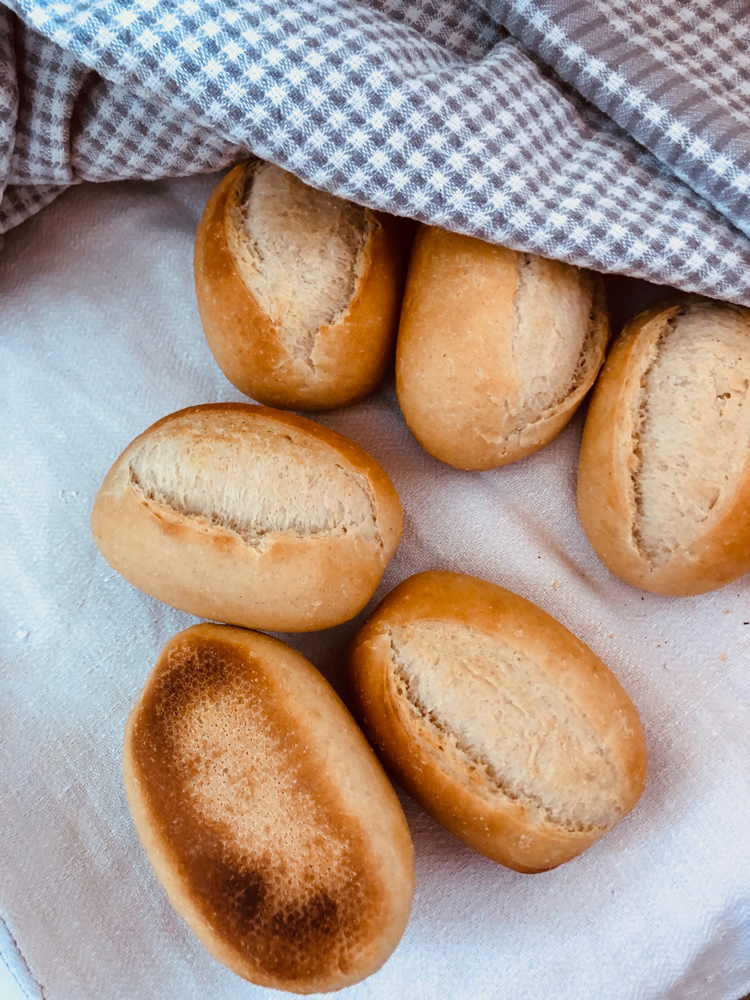

Principal fornecimento
Seu principal fornecimento esta relacionado a massas, com conhecimentos que foram adiquiridos em 2001 e aprimorados até os dias de hoje.
Famosa por seus pães com sabores e aparencia inigualável.

Tipos de pães
O Empório Leão de Prata possui diversos tipos de pães, mas possui dois tipos mais vendidos:
Pão Francês:
Feito com ingredientes simples e com muito amor e carinho, possui uma aparência belecima e um gosto excepcional.
Pão de Leite:
Feito com ingredientes simples e com muito amor e carinho, possui uma massa mais macia.
Mercadorias em geral
Para sua comodidade o Empório Leão de Prata fornece mercadorias em geral, assim é possível comprar diversos itens para um café da manhã ou um almoço em família.